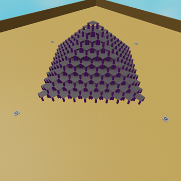

This page is dedicated to random stuff I've made throughout the years. I will add more later on as this page isn't fully finished yet.
A basic ban hammer tool I made in my free time. Comes with some cool animations and shockwave particles! (Doesn't ban players)
You know those things that astronauts spun around in? I recreated them inside roblox!
I turned it into a little showcase and added a little control panel to adjust the speed of each ring.
Play it here!A showcase I made featuring a large pyramid from a bunch of stacked pillars. I got inspiration from the classic style of building from old Roblox. Oh yeah, you can also blow up the entire pyramid if you want to!
